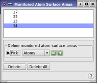

| Using | Features | Links |
During a dynamics simulation it is possible to monitor the solvent accessible surface area of an atom. The "Monitored Atom Surface Areas" panel is used to specify the atoms whose surface areas are to be monitored during the simulation.
To open this panel, click Surface Areas in the Monitor tab of the Dynamics panel or the MC/SD panel.
To monitor the surface area of specific atoms, pick the atoms on the structure in the Workspace through the standard picking controls. The selection tool allows you to specify atoms in the following ways:
Choose a structure object from the Pick menu and pick atoms in the Workspace belonging to that structure object.
Choose all atoms by clicking the All button.
Choose an atom group from the Atom Selections button to monitor all atoms in that object.
Choose atoms using the Atom Selection dialog box, which creates ASL expressions that define the selected atoms. Open the Atom Selection dialog box by clicking the Atom Selection button and choosing Select.
After each atom is picked, a new entry appears in the list of atoms at the top of the panel, and a marker is displayed in the Workspace next to the atom. The selected atom marker is colored teal, the other monitored atom markers are colored green.
To delete a monitored atom, click the Delete button. To delete all monitored atoms, click the Delete All button.

After each atom is picked, a new entry will appear in the list of atoms in the Monitored Atoms List located at the top of the panel.
The standard picking controls are used to selected atoms that will be monitored. Markers (light green star with an eye icon) for the monitored atoms are shown in the Workspace, and are removed when you close the panel. The selected atom is marked in turquoise.
To delete a monitored atom, select it in the Monitored Atom List by clicking on it or re-picking the atom, then click Delete.
Click this button to delete all monitored atoms.